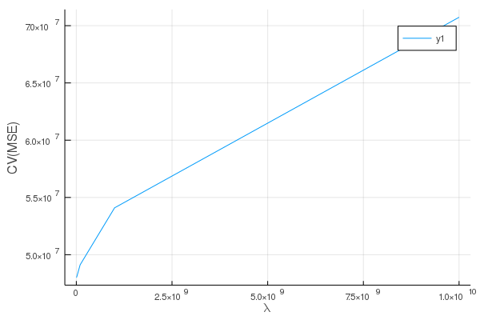
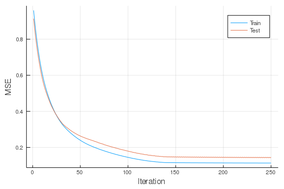

This work is licensed under a Creative Commons Attribution-ShareAlike 4.0 International License
About this document¶
This document was created using Weave.jl. The code is available in on github. The same document generates both static webpages and associated (jupyter notebook).
Introduction¶
This document is a companion to my “Machine learning in economics”. Those notes discuss the recent use of machine learning in economics, with a focus on lasso and random forests. The code in those notes is written in R. This document will look at similar code in Julia.
RCall¶
If you want to use the methods of Chernozhukov and coauthors implements
in the R packaga Chernozhukov, Hansen, and Spindler (2016)
or the methods of Athey and coauthors implemented in the R package
Tibshirani et al. (2018) , then it makes sense to use the R
pacakge. You could simply write all your code in R. However, if you
prefer using Julia, you can just call the necessary R functions with
RCall.jl.
Here, we load the pipeline data used in the machine learning methods notes, and do some cleaning in Julia.
using RCall, DataFrames, Missings, Statistics
R"load(paste($(docdir),\"/rmd/pipelines.Rdata\",sep=\"\"))"
println(R"ls()")
RObject{StrSxp}
[1] "#JL" "data"
data = @rget data # data on left is new Julia variable, data on right is the one in R
println(R"summary(data)")
RObject{StrSxp}
respondent_id report_yr report_prd major
Min. : 1.0 Min. :1991 Min. :12 Mode :logical
1st Qu.: 64.0 1st Qu.:1997 1st Qu.:12 FALSE:1192
Median :148.0 Median :2003 Median :12 TRUE :2797
Mean :184.3 Mean :2003 Mean :12 NA's :2180
3rd Qu.:214.0 3rd Qu.:2010 3rd Qu.:12
Max. :745.0 Max. :2016 Max. :12
NA's :3371
respondent_name transPlant_bal_end_yr
Centra Pipelines Minnesota Inc. : 22 Min. :0.000e+00
Tuscarora Gas Transmission Company : 22 1st Qu.:4.197e+07
Eastern Shore Natural Gas Company : 22 Median :2.468e+08
Kern River Gas Transmission Company : 21 Mean :8.297e+08
National Fuel Gas Supply Corporation: 21 3rd Qu.:1.087e+09
(Other) :2938 Max. :1.570e+10
NA's :3123 NA's :3645
transPlant_bal_beg_yr transPlant_additions transPlant_retirement
Min. :0.000e+00 Min. :-3.869e+07 Min. :-79970304
1st Qu.:3.363e+07 1st Qu.: 6.953e+04 1st Qu.: 0
Median :2.347e+08 Median : 2.476e+06 Median : 22013
Mean :9.727e+10 Mean : 4.830e+08 Mean : 4906190
3rd Qu.:1.034e+09 3rd Qu.: 2.763e+07 3rd Qu.: 2659848
Max. :4.271e+13 Max. : 4.283e+11 Max. :944654872
NA's :3645 NA's :3645 NA's :3647
transPlant_transfers storUnd_bal_end_yr storUnd_bal_beg_yr
Min. :-3.901e+08 Min. :0.000e+00 Min. :0.000e+00
1st Qu.: 0.000e+00 1st Qu.:2.050e+07 1st Qu.:1.878e+07
Median : 0.000e+00 Median :7.018e+07 Median :6.848e+07
Mean : 3.759e+08 Mean :1.393e+08 Mean :1.334e+08
3rd Qu.: 0.000e+00 3rd Qu.:1.545e+08 3rd Qu.:1.499e+08
Max. : 7.167e+11 Max. :1.731e+09 Max. :1.535e+09
NA's :3646 NA's :5094 NA's :5094
storUnd_additions storUnd_retirement storUnd_transfers
Min. :-13579236 Min. :-30407306 Min. :-41706111
1st Qu.: 59810 1st Qu.: 0 1st Qu.: 0
Median : 972845 Median : 46278 Median : 0
Mean : 6827477 Mean : 818507 Mean : 197425
3rd Qu.: 5304596 3rd Qu.: 459870 3rd Qu.: 0
Max. :199031281 Max. :143214951 Max. : 92735814
NA's :5094 NA's :5096 NA's :5095
storOth_bal_end_yr storOth_bal_beg_yr storOth_additions storOth_retirem
ent
Min. : 0 Min. : 0 Min. :-3435059 Min. :-175808
1
1st Qu.: 0 1st Qu.: 0 1st Qu.: 0 1st Qu.:
0
Median : 0 Median : 0 Median : 0 Median :
0
Mean : 18806025 Mean : 18321094 Mean : 521657 Mean : 7732
2
3rd Qu.: 30401797 3rd Qu.: 29009530 3rd Qu.: 135903 3rd Qu.:
0
Max. :114235490 Max. :114235490 Max. :21112587 Max. : 587340
4
NA's :5659 NA's :5659 NA's :5659 NA's :5661
storOth_transfers distPlant_bal_end_yr distPlant_bal_beg_yr
Min. :-13082412 Min. :0.000e+00 Min. :0.000e+00
1st Qu.: 0 1st Qu.:0.000e+00 1st Qu.:0.000e+00
Median : 0 Median :0.000e+00 Median :0.000e+00
Mean : 29209 Mean :4.239e+07 Mean :4.016e+07
3rd Qu.: 0 3rd Qu.:0.000e+00 3rd Qu.:0.000e+00
Max. : 31701916 Max. :1.848e+09 Max. :1.767e+09
NA's :5660 NA's :5765 NA's :5765
distPlant_additions distPlant_retirement distPlant_transfers
Min. : 0 Min. :-4044461 Min. :-9055315
1st Qu.: 0 1st Qu.: 0 1st Qu.: 0
Median : 0 Median : 0 Median : 0
Mean : 2439675 Mean : 251544 Mean : 89158
3rd Qu.: 0 3rd Qu.: 0 3rd Qu.: 0
Max. :92945881 Max. :12234995 Max. :21682335
NA's :5765 NA's :5767 NA's :5766
totPlant_bal_end_yr totPlant_bal_beg_yr totPlant_additions
Min. :0.000e+00 Min. :0.000e+00 Min. :-3.647e+07
1st Qu.:5.707e+07 1st Qu.:4.976e+07 1st Qu.: 1.971e+05
Median :2.465e+08 Median :2.283e+08 Median : 3.039e+06
Mean :8.644e+10 Mean :1.236e+11 Mean : 9.992e+09
3rd Qu.:1.159e+09 3rd Qu.:1.121e+09 3rd Qu.: 3.340e+07
Max. :3.012e+13 Max. :4.589e+13 Max. : 4.721e+12
NA's :3377 NA's :3377 NA's :3377
totPlant_retirement totPlant_transfers gasPlantPurchased_bal_end_yr
Min. :-2.371e+12 Min. :-5.476e+11 Min. :-247084581
1st Qu.: 0.000e+00 1st Qu.: 0.000e+00 1st Qu.: 0
Median : 1.254e+05 Median : 0.000e+00 Median : 0
Mean :-1.039e+09 Mean :-2.005e+08 Mean : -143140
3rd Qu.: 4.541e+06 3rd Qu.: 0.000e+00 3rd Qu.: 0
Max. : 2.305e+11 Max. : 4.679e+08 Max. : 19111616
NA's :3379 NA's :3378 NA's :5751
gasPlantPurchased_bal_beg_yr gasPlantPurchased_additions
Min. :-247084581 Min. :-20167284
1st Qu.: 0 1st Qu.: 0
Median : 0 Median : 0
Mean : -226696 Mean : 393600
3rd Qu.: 0 3rd Qu.: 0
Max. : 19111616 Max. : 89266951
NA's :5751 NA's :5751
gasPlantPurchased_retirement gasPlantPurchased_transfers
Min. :0.000 Min. :-221811365
1st Qu.:0.000 1st Qu.: 0
Median :0.001 Median : 0
Mean :0.001 Mean : -900768
3rd Qu.:0.001 3rd Qu.: 0
Max. :0.001 Max. : 18959955
NA's :5753 NA's :5752
gasPlantSold_bal_end_yr gasPlantSold_bal_beg_yr gasPlantSold_additions
Min. :-23581075 Min. :-23581075 Min. : 0
1st Qu.: 0 1st Qu.: 0 1st Qu.: 0
Median : 0 Median : 0 Median : 0
Mean : -66619 Mean : -68704 Mean : 1769
3rd Qu.: 0 3rd Qu.: 0 3rd Qu.: 0
Max. : 2443382 Max. : 1607442 Max. :734073
NA's :5754 NA's :5754 NA's :5754
gasPlantSold_retirement gasPlantSold_transfers transExp_amt_cur_yr
Min. : -95366484 Min. :-134794541 Min. :-37358969
1st Qu.: 0 1st Qu.: 0 1st Qu.: 802391
Median : 0 Median : 0 Median : 5687784
Mean : 3710404 Mean : -78661 Mean : 35504369
3rd Qu.: 0 3rd Qu.: 0 3rd Qu.: 35120431
Max. :1015646401 Max. : 321322660 Max. :523822861
NA's :5756 NA's :5755 NA's :3603
transExp_amt_prev_y distExp_amt_cur_yr distExp_amt_prev_y transWage_total
Min. :-37358969 Min. : -17575 Min. : -17575 Min. : -139
3
1st Qu.: 649396 1st Qu.: 0 1st Qu.: 0 1st Qu.: 66615
4
Median : 5331112 Median : 0 Median : 0 Median : 339296
5
Mean : 35019750 Mean : 1454209 Mean : 1341170 Mean :1080043
5
3rd Qu.: 34706700 3rd Qu.: 3455 3rd Qu.: 2058 3rd Qu.:1585465
8
Max. :523822861 Max. :119176478 Max. :85878566 Max. :9175028
4
NA's :3604 NA's :5679 NA's :5680 NA's :4778
distWage_total transRev_tot_rev_cu transDeka
Min. : 0 Min. : -28012550 Min. :0.000e+00
1st Qu.: 0 1st Qu.: 5041184 1st Qu.:2.307e+07
Median : 0 Median : 33803965 Median :1.173e+08
Mean : 142722 Mean : 132751654 Mean :3.399e+08
3rd Qu.: 0 3rd Qu.: 185279740 3rd Qu.:4.568e+08
Max. :43876075 Max. :1404196622 Max. :4.968e+09
NA's :4778 NA's :3736 NA's :3736
distRev_tot_rev_cu distRev_deka_cur_y totRev_tot_rev_cu
Min. : -91518 Min. : -18761 Min. :-2.852e+07
1st Qu.: 0 1st Qu.: 0 1st Qu.: 6.710e+06
Median : 0 Median : 0 Median : 3.683e+07
Mean : 3111474 Mean : 2657997 Mean : 9.284e+09
3rd Qu.: 0 3rd Qu.: 11946 3rd Qu.: 1.980e+08
Max. :181355381 Max. :64542627 Max. : 7.733e+12
NA's :5789 NA's :5789 NA's :3373
totDeka gasRev_gas_yr gasRev_tot_yr
Min. :-1.342e+06 Min. : -1341785 Min. : -1341785
1st Qu.: 9.802e+05 1st Qu.: 6671658 1st Qu.: 7143938
Median : 4.461e+07 Median : 36404737 Median : 36906799
Mean : 9.403e+09 Mean : 161689778 Mean : 166357167
3rd Qu.: 3.277e+08 3rd Qu.: 196680204 3rd Qu.: 205086410
Max. : 7.733e+12 Max. :2013663391 Max. :3416395891
NA's :3373 NA's :3365 NA's :3365
utilExp_gas_yr utilExp_tot_yr netInc_gas_yr
Min. : -25413164 Min. : -25413164 Min. :-546506411
1st Qu.: 5323440 1st Qu.: 5716378 1st Qu.: 475073
Median : 25174864 Median : 25505202 Median : 9478978
Mean : 119506323 Mean : 123596781 Mean : 40587135
3rd Qu.: 130611510 3rd Qu.: 136155789 3rd Qu.: 54470873
Max. :1761069969 Max. :3085146046 Max. : 575530426
NA's :3337 NA's :3337 NA's :3347
netInc_tot_yr North Carolina Tennessee Virginia
Min. :-546506411 Min. :0.001 Min. :0.000 Min. :0.024
1st Qu.: 572629 1st Qu.:0.001 1st Qu.:0.014 1st Qu.:0.075
Median : 10352176 Median :0.077 Median :0.095 Median :0.124
Mean : 41127265 Mean :0.233 Mean :0.122 Mean :0.247
3rd Qu.: 55231962 3rd Qu.:0.084 3rd Qu.:0.116 3rd Qu.:0.246
Max. : 575530426 Max. :1.000 Max. :0.635 Max. :1.000
NA's :3347 NA's :6074 NA's :5859 NA's :6031
Illinois Indiana Kentucky Gulf of Mexico
Min. :0.006 Min. :0.001 Min. :0.010 Min. :0.000
1st Qu.:0.074 1st Qu.:0.023 1st Qu.:0.075 1st Qu.:0.023
Median :0.143 Median :0.104 Median :0.132 Median :0.176
Mean :0.229 Mean :0.145 Mean :0.281 Mean :0.287
3rd Qu.:0.368 3rd Qu.:0.262 3rd Qu.:0.241 3rd Qu.:0.513
Max. :1.000 Max. :0.550 Max. :1.000 Max. :0.825
NA's :5806 NA's :5919 NA's :5876 NA's :5866
Louisiana Alabama Florida Mississippi
Min. :0.000 Min. :0.028 Min. :0.000 Min. :0.000
1st Qu.:0.118 1st Qu.:0.073 1st Qu.:0.000 1st Qu.:0.095
Median :0.261 Median :0.129 Median :0.018 Median :0.162
Mean :0.408 Mean :0.237 Mean :0.167 Mean :0.281
3rd Qu.:0.824 3rd Qu.:0.259 3rd Qu.:0.497 3rd Qu.:0.261
Max. :1.000 Max. :1.000 Max. :0.658 Max. :1.000
NA's :5328 NA's :5902 NA's :6025 NA's :5675
South Carolina Texas Arkansas Connecticut
Min. :0.004 Min. :0.000 Min. :0.000 Min. :0.009
1st Qu.:0.019 1st Qu.:0.019 1st Qu.:0.026 1st Qu.:0.009
Median :0.049 Median :0.097 Median :0.090 Median :0.258
Mean :0.157 Mean :0.214 Mean :0.225 Mean :0.178
3rd Qu.:0.072 3rd Qu.:0.240 3rd Qu.:0.407 3rd Qu.:0.295
Max. :0.990 Max. :1.000 Max. :1.000 Max. :0.295
NA's :6082 NA's :5366 NA's :5894 NA's :6099
Massachusetts New Hampshire New Jersey New York
Min. :0.000 Min. :0.006 Min. :0.000 Min. :0.010
1st Qu.:0.042 1st Qu.:0.006 1st Qu.:0.016 1st Qu.:0.021
Median :0.099 Median :0.387 Median :0.053 Median :0.210
Mean :0.213 Mean :0.264 Mean :0.079 Mean :0.440
3rd Qu.:0.288 3rd Qu.:0.479 3rd Qu.:0.064 3rd Qu.:1.000
Max. :1.000 Max. :0.479 Max. :0.500 Max. :1.000
NA's :6019 NA's :6081 NA's :6007 NA's :5871
Ohio Oklahoma Pennsylvania Rhode Island
Min. :0.000 Min. :0.000 Min. :0.081 Min. :0.004
1st Qu.:0.037 1st Qu.:0.010 1st Qu.:0.141 1st Qu.:0.004
Median :0.083 Median :0.083 Median :0.396 Median :0.012
Mean :0.182 Mean :0.176 Mean :0.410 Mean :0.038
3rd Qu.:0.270 3rd Qu.:0.250 3rd Qu.:0.594 3rd Qu.:0.095
Max. :1.000 Max. :1.000 Max. :1.000 Max. :0.095
NA's :5861 NA's :5677 NA's :5893 NA's :6103
West Virginia Wyoming Delaware Maine
Min. :0.011 Min. :0.000 Min. :0.000 Min. :0.001
1st Qu.:0.057 1st Qu.:0.063 1st Qu.:0.001 1st Qu.:0.001
Median :0.231 Median :0.170 Median :0.002 Median :0.383
Mean :0.260 Mean :0.320 Mean :0.114 Mean :0.359
3rd Qu.:0.343 3rd Qu.:0.500 3rd Qu.:0.006 3rd Qu.:0.570
Max. :1.000 Max. :1.000 Max. :0.510 Max. :0.646
NA's :6011 NA's :5739 NA's :6047 NA's :6081
Maryland Missouri Colorado Iowa
Min. :0.004 Min. :0.000 Min. :0.000 Min. :0.052
1st Qu.:0.027 1st Qu.:0.009 1st Qu.:0.060 1st Qu.:0.101
Median :0.036 Median :0.035 Median :0.125 Median :0.212
Mean :0.113 Mean :0.088 Mean :0.307 Mean :0.164
3rd Qu.:0.093 3rd Qu.:0.131 3rd Qu.:0.508 3rd Qu.:0.240
Max. :0.568 Max. :0.918 Max. :1.000 Max. :0.261
NA's :6016 NA's :5886 NA's :5734 NA's :6059
Kansas Nebraska New Mexico Michigan
Min. :0.004 Min. :0.001 Min. :0.000 Min. :0.000
1st Qu.:0.066 1st Qu.:0.005 1st Qu.:0.003 1st Qu.:0.007
Median :0.187 Median :0.057 Median :0.097 Median :0.113
Mean :0.264 Mean :0.160 Mean :0.200 Mean :0.343
3rd Qu.:0.492 3rd Qu.:0.394 3rd Qu.:0.331 3rd Qu.:0.527
Max. :1.000 Max. :0.562 Max. :1.000 Max. :1.000
NA's :5847 NA's :5995 NA's :5920 NA's :5909
Montana Utah Arizona California
Min. :0.001 Min. :0.020 Min. :0.152 Min. :0.000
1st Qu.:0.012 1st Qu.:0.057 1st Qu.:0.226 1st Qu.:0.012
Median :0.151 Median :0.117 Median :0.299 Median :0.090
Mean :0.215 Mean :0.204 Mean :0.315 Mean :0.256
3rd Qu.:0.409 3rd Qu.:0.347 3rd Qu.:0.334 3rd Qu.:0.336
Max. :0.702 Max. :0.512 Max. :1.000 Max. :1.000
NA's :6057 NA's :6047 NA's :6041 NA's :5960
North Dakota Idaho Oregon Washington
Min. :0.000 Min. :0.191 Min. :0.162 Min. :0.005
1st Qu.:0.021 1st Qu.:0.191 1st Qu.:0.162 1st Qu.:0.005
Median :0.204 Median :0.216 Median :0.336 Median :0.246
Mean :0.173 Mean :0.250 Mean :0.317 Mean :0.217
3rd Qu.:0.366 3rd Qu.:0.216 3rd Qu.:0.448 3rd Qu.:0.330
Max. :0.378 Max. :0.502 Max. :0.498 Max. :0.330
NA's :6054 NA's :6113 NA's :6085 NA's :6105
Wisconsin South Dakota Minnesota Nevada
Min. :0.001 Min. :0.032 Min. :0.000 Min. :0.214
1st Qu.:0.068 1st Qu.:0.032 1st Qu.:0.143 1st Qu.:0.214
Median :0.121 Median :0.054 Median :0.314 Median :0.328
Mean :0.173 Mean :0.082 Mean :0.370 Mean :0.392
3rd Qu.:0.306 3rd Qu.:0.166 3rd Qu.:0.673 3rd Qu.:0.636
Max. :0.488 Max. :0.166 Max. :1.000 Max. :0.636
NA's :6034 NA's :6102 NA's :6015 NA's :6099
Vermont Georgia reserve wellPrice
Min. :0.001 Min. :0.000 Min. : 18.5 Min. :0.0008
1st Qu.:0.001 1st Qu.:0.035 1st Qu.: 3483.6 1st Qu.:1.7300
Median :0.039 Median :0.094 Median : 17522.1 Median :2.4300
Mean :0.024 Mean :0.296 Mean : 37811.7 Mean :3.2346
3rd Qu.:0.039 3rd Qu.:0.334 3rd Qu.: 45793.4 3rd Qu.:4.2300
Max. :0.039 Max. :1.000 Max. :406218.0 Max. :9.6500
NA's :6124 NA's :6018 NA's :2025 NA's :2972
cityPrice heatDegDays dpReldp dpRelwellp
Min. : 0.3858 Min. : 223.5 Min. :-2.4330 Min. :-0.4836
1st Qu.: 3.0400 1st Qu.:2243.8 1st Qu.: 0.6063 1st Qu.: 0.2245
Median : 4.4678 Median :4089.8 Median : 0.8862 Median : 0.3797
Mean : 4.8322 Mean :4200.4 Mean : 0.8860 Mean : 0.4179
3rd Qu.: 6.0845 3rd Qu.:5927.0 3rd Qu.: 1.1382 3rd Qu.: 0.5790
Max. :12.4646 Max. :9594.0 Max. : 3.7146 Max. : 1.7942
NA's :1619 NA's :1983 NA's :2164 NA's :2164
relWellP reserveGrowth reserveGrowthN wellPgn
Min. :0.0002 Min. :-0.6889 Min. :-0.1657 Min. :-0.5395
1st Qu.:0.7457 1st Qu.:-0.0376 1st Qu.: 0.0039 1st Qu.:-0.1282
Median :0.9585 Median : 0.0107 Median : 0.0195 Median : 0.0610
Mean :0.8944 Mean : 0.0347 Mean : 0.0263 Mean : 0.0613
3rd Qu.:1.0678 3rd Qu.: 0.0695 3rd Qu.: 0.0609 3rd Qu.: 0.2207
Max. :2.0000 Max. : 4.5771 Max. : 0.1252 Max. : 0.6804
NA's :2972 NA's :2025 NA's :1619 NA's :2164
cityPgn plantArea dekaArea revArea
Min. :-0.2941 Min. :6.431e+07 Min. : 12832750 Min. : 1110899
1
1st Qu.:-0.0890 1st Qu.:5.064e+08 1st Qu.:234057607 1st Qu.: 8309166
6
Median : 0.0098 Median :6.669e+08 Median :288806666 Median :10524668
1
Mean : 0.0321 Mean :9.042e+10 Mean :301966482 Mean :11674461
2
3rd Qu.: 0.1368 3rd Qu.:8.670e+08 3rd Qu.:363320191 3rd Qu.:13730279
1
Max. : 0.4903 Max. :2.123e+13 Max. :897878705 Max. :52213081
5
NA's :1619 NA's :3454 NA's :3454 NA's :3454
transProfit
Min. :-130747990
1st Qu.: 2875517
Median : 27541764
Mean : 96425928
3rd Qu.: 137258364
Max. :1165050214
NA's :3764
println(describe(data))
122×8 DataFrame
│ Row │ variable │ mean │ min
│ median │ max │
nunique │ nmissing │ eltype │
│ │ Symbol │ Union… │ Any
│ Union… │ Any │
Union… │ Union… │ Type │
├─────┼──────────────────────────────┼─────────────┼───────────────────────
─────────────┼────────────┼───────────────────────────────────────────────┼
─────────┼──────────┼───────────────────────────────────────────┤
│ 1 │ respondent_id │ 184.3 │ 1
│ 148.0 │ 745 │
│ │ Int64 │
│ 2 │ report_yr │ 2003.49 │ 1991
│ 2003.0 │ 2016 │
│ │ Int64 │
│ 3 │ report_prd │ 12.0 │ 12
│ 12.0 │ 12 │
│ 3371 │ Union{Missing, Int64} │
│ 4 │ major │ 0.701178 │ 0
│ 1.0 │ 1 │
│ 2180 │ Union{Missing, Bool} │
│ 5 │ respondent_name │ │ Algonquin Gas Transmis
sion Company │ │ Southern Natural Gas Company │
440 │ 3123 │ Union{Missing, CategoricalString{UInt32}} │
│ 6 │ transPlant_bal_end_yr │ 8.2974e8 │ 0.0
│ 2.46756e8 │ 1.5697e10 │
│ 3645 │ Union{Missing, Float64} │
│ 7 │ transPlant_bal_beg_yr │ 9.72705e10 │ 0.0
│ 2.34689e8 │ 4.27076e13 │
│ 3645 │ Union{Missing, Float64} │
│ 8 │ transPlant_additions │ 4.83036e8 │ -3.8691e7
│ 2.47589e6 │ 4.2832e11 │
│ 3645 │ Union{Missing, Float64} │
│ 9 │ transPlant_retirement │ 4.90619e6 │ -7.99703e7
│ 22013.0 │ 9.44655e8 │
│ 3647 │ Union{Missing, Float64} │
│ 10 │ transPlant_transfers │ 3.75873e8 │ -3.90149e8
│ 0.0 │ 7.16712e11 │
│ 3646 │ Union{Missing, Float64} │
│ 11 │ storUnd_bal_end_yr │ 1.39266e8 │ 0.0
│ 7.01763e7 │ 1.73138e9 │
│ 5094 │ Union{Missing, Float64} │
│ 12 │ storUnd_bal_beg_yr │ 1.33358e8 │ 0.0
│ 6.84785e7 │ 1.53502e9 │
│ 5094 │ Union{Missing, Float64} │
│ 13 │ storUnd_additions │ 6.82748e6 │ -1.35792e7
│ 972845.0 │ 1.99031e8 │
│ 5094 │ Union{Missing, Float64} │
│ 14 │ storUnd_retirement │ 8.18507e5 │ -3.04073e7
│ 46278.0 │ 1.43215e8 │
│ 5096 │ Union{Missing, Float64} │
│ 15 │ storUnd_transfers │ 1.97425e5 │ -4.17061e7
│ 0.0 │ 9.27358e7 │
│ 5095 │ Union{Missing, Float64} │
│ 16 │ storOth_bal_end_yr │ 1.8806e7 │ 0.0
│ 0.001 │ 1.14235e8 │
│ 5659 │ Union{Missing, Float64} │
│ 17 │ storOth_bal_beg_yr │ 1.83211e7 │ 0.0
│ 0.001 │ 1.14235e8 │
│ 5659 │ Union{Missing, Float64} │
│ 18 │ storOth_additions │ 521657.0 │ -3.43506e6
│ 0.001 │ 2.11126e7 │
│ 5659 │ Union{Missing, Float64} │
│ 19 │ storOth_retirement │ 77321.6 │ -1.75808e6
│ 0.001 │ 5.8734e6 │
│ 5661 │ Union{Missing, Float64} │
│ 20 │ storOth_transfers │ 29208.7 │ -1.30824e7
│ 0.0 │ 3.17019e7 │
│ 5660 │ Union{Missing, Float64} │
│ 21 │ distPlant_bal_end_yr │ 4.23856e7 │ 0.0
│ 0.001 │ 1.8477e9 │
│ 5765 │ Union{Missing, Float64} │
│ 22 │ distPlant_bal_beg_yr │ 4.01649e7 │ 0.0
│ 0.001 │ 1.76729e9 │
│ 5765 │ Union{Missing, Float64} │
│ 23 │ distPlant_additions │ 2.43968e6 │ 0.0
│ 0.001 │ 9.29459e7 │
│ 5765 │ Union{Missing, Float64} │
│ 24 │ distPlant_retirement │ 2.51544e5 │ -4.04446e6
│ 0.001 │ 1.2235e7 │
│ 5767 │ Union{Missing, Float64} │
│ 25 │ distPlant_transfers │ 89158.4 │ -9.05532e6
│ 0.001 │ 2.16823e7 │
│ 5766 │ Union{Missing, Float64} │
│ 26 │ totPlant_bal_end_yr │ 8.64443e10 │ 0.0
│ 2.46454e8 │ 3.01242e13 │
│ 3377 │ Union{Missing, Float64} │
│ 27 │ totPlant_bal_beg_yr │ 1.23583e11 │ 0.0
│ 2.28324e8 │ 4.58896e13 │
│ 3377 │ Union{Missing, Float64} │
│ 28 │ totPlant_additions │ 9.99185e9 │ -3.64745e7
│ 3.03877e6 │ 4.72149e12 │
│ 3377 │ Union{Missing, Float64} │
│ 29 │ totPlant_retirement │ -1.03875e9 │ -2.37086e12
│ 1.25447e5 │ 2.3049e11 │
│ 3379 │ Union{Missing, Float64} │
│ 30 │ totPlant_transfers │ -2.00538e8 │ -5.47591e11
│ 0.0 │ 4.67901e8 │
│ 3378 │ Union{Missing, Float64} │
│ 31 │ gasPlantPurchased_bal_end_yr │ -1.4314e5 │ -2.47085e8
│ 0.001 │ 1.91116e7 │
│ 5751 │ Union{Missing, Float64} │
│ 32 │ gasPlantPurchased_bal_beg_yr │ -2.26696e5 │ -2.47085e8
│ 0.001 │ 1.91116e7 │
│ 5751 │ Union{Missing, Float64} │
│ 33 │ gasPlantPurchased_additions │ 393600.0 │ -2.01673e7
│ 0.001 │ 8.9267e7 │
│ 5751 │ Union{Missing, Float64} │
│ 34 │ gasPlantPurchased_retirement │ 0.000514423 │ 0.0
│ 0.001 │ 0.001 │
│ 5753 │ Union{Missing, Float64} │
│ 35 │ gasPlantPurchased_transfers │ -9.00768e5 │ -2.21811e8
│ 0.001 │ 1.896e7 │
│ 5752 │ Union{Missing, Float64} │
│ 36 │ gasPlantSold_bal_end_yr │ -66618.6 │ -2.35811e7
│ 0.001 │ 2.44338e6 │
│ 5754 │ Union{Missing, Float64} │
│ 37 │ gasPlantSold_bal_beg_yr │ -68703.6 │ -2.35811e7
│ 0.001 │ 1.60744e6 │
│ 5754 │ Union{Missing, Float64} │
│ 38 │ gasPlantSold_additions │ 1768.85 │ 0.0
│ 0.001 │ 734073.0 │
│ 5754 │ Union{Missing, Float64} │
│ 39 │ gasPlantSold_retirement │ 3.7104e6 │ -9.53665e7
│ 0.001 │ 1.01565e9 │
│ 5756 │ Union{Missing, Float64} │
│ 40 │ gasPlantSold_transfers │ -78661.0 │ -1.34795e8
│ 0.001 │ 3.21323e8 │
│ 5755 │ Union{Missing, Float64} │
│ 41 │ transExp_amt_cur_yr │ 3.55044e7 │ -3.7359e7
│ 5.68778e6 │ 5.23823e8 │
│ 3603 │ Union{Missing, Float64} │
│ 42 │ transExp_amt_prev_y │ 3.50198e7 │ -3.7359e7
│ 5.33111e6 │ 5.23823e8 │
│ 3604 │ Union{Missing, Float64} │
│ 43 │ distExp_amt_cur_yr │ 1.45421e6 │ -17575.0
│ 0.001 │ 1.19176e8 │
│ 5679 │ Union{Missing, Float64} │
│ 44 │ distExp_amt_prev_y │ 1.34117e6 │ -17575.0
│ 0.001 │ 8.58786e7 │
│ 5680 │ Union{Missing, Float64} │
│ 45 │ transWage_total │ 1.08004e7 │ -1393
│ 3.39297e6 │ 91750284 │
│ 4778 │ Union{Missing, Int64} │
│ 46 │ distWage_total │ 1.42722e5 │ 0
│ 0.0 │ 43876075 │
│ 4778 │ Union{Missing, Int64} │
│ 47 │ transRev_tot_rev_cu │ 1.32752e8 │ -2.80126e7
│ 3.3804e7 │ 1.4042e9 │
│ 3736 │ Union{Missing, Float64} │
│ 48 │ transDeka │ 3.39851e8 │ 0.0
│ 1.17323e8 │ 4.96799e9 │
│ 3736 │ Union{Missing, Float64} │
│ 49 │ distRev_tot_rev_cu │ 3.11147e6 │ -91518.0
│ 0.001 │ 1.81355e8 │
│ 5789 │ Union{Missing, Float64} │
│ 50 │ distRev_deka_cur_y │ 2.658e6 │ -18761.0
│ 0.001 │ 6.45426e7 │
│ 5789 │ Union{Missing, Float64} │
│ 51 │ totRev_tot_rev_cu │ 9.28427e9 │ -2.85193e7
│ 3.6827e7 │ 7.73262e12 │
│ 3373 │ Union{Missing, Float64} │
│ 52 │ totDeka │ 9.40346e9 │ -1.34179e6
│ 4.46131e7 │ 7.73262e12 │
│ 3373 │ Union{Missing, Float64} │
│ 53 │ gasRev_gas_yr │ 1.6169e8 │ -1.34179e6
│ 3.64047e7 │ 2.01366e9 │
│ 3365 │ Union{Missing, Float64} │
│ 54 │ gasRev_tot_yr │ 1.66357e8 │ -1.34179e6
│ 3.69068e7 │ 3.4164e9 │
│ 3365 │ Union{Missing, Float64} │
│ 55 │ utilExp_gas_yr │ 1.19506e8 │ -2.54132e7
│ 2.51749e7 │ 1.76107e9 │
│ 3337 │ Union{Missing, Float64} │
│ 56 │ utilExp_tot_yr │ 1.23597e8 │ -2.54132e7
│ 2.55052e7 │ 3.08515e9 │
│ 3337 │ Union{Missing, Float64} │
│ 57 │ netInc_gas_yr │ 4.05871e7 │ -5.46506e8
│ 9.47898e6 │ 5.7553e8 │
│ 3347 │ Union{Missing, Float64} │
│ 58 │ netInc_tot_yr │ 4.11273e7 │ -5.46506e8
│ 1.03522e7 │ 5.7553e8 │
│ 3347 │ Union{Missing, Float64} │
│ 59 │ North Carolina │ NaN │ NaN
│ │ NaN │
│ 3123 │ Union{Missing, Float64} │
│ 60 │ Tennessee │ NaN │ NaN
│ │ NaN │
│ 3123 │ Union{Missing, Float64} │
│ 61 │ Virginia │ NaN │ NaN
│ │ NaN │
│ 3123 │ Union{Missing, Float64} │
│ 62 │ Illinois │ NaN │ NaN
│ │ NaN │
│ 3123 │ Union{Missing, Float64} │
│ 63 │ Indiana │ NaN │ NaN
│ │ NaN │
│ 3123 │ Union{Missing, Float64} │
│ 64 │ Kentucky │ NaN │ NaN
│ │ NaN │
│ 3123 │ Union{Missing, Float64} │
│ 65 │ Gulf of Mexico │ NaN │ NaN
│ │ NaN │
│ 3123 │ Union{Missing, Float64} │
│ 66 │ Louisiana │ NaN │ NaN
│ │ NaN │
│ 3123 │ Union{Missing, Float64} │
│ 67 │ Alabama │ NaN │ NaN
│ │ NaN │
│ 3123 │ Union{Missing, Float64} │
│ 68 │ Florida │ NaN │ NaN
│ │ NaN │
│ 3123 │ Union{Missing, Float64} │
│ 69 │ Mississippi │ NaN │ NaN
│ │ NaN │
│ 3123 │ Union{Missing, Float64} │
│ 70 │ South Carolina │ NaN │ NaN
│ │ NaN │
│ 3123 │ Union{Missing, Float64} │
│ 71 │ Texas │ NaN │ NaN
│ │ NaN │
│ 3123 │ Union{Missing, Float64} │
│ 72 │ Arkansas │ NaN │ NaN
│ │ NaN │
│ 3123 │ Union{Missing, Float64} │
│ 73 │ Connecticut │ NaN │ NaN
│ │ NaN │
│ 3123 │ Union{Missing, Float64} │
│ 74 │ Massachusetts │ NaN │ NaN
│ │ NaN │
│ 3123 │ Union{Missing, Float64} │
│ 75 │ New Hampshire │ NaN │ NaN
│ │ NaN │
│ 3123 │ Union{Missing, Float64} │
│ 76 │ New Jersey │ NaN │ NaN
│ │ NaN │
│ 3123 │ Union{Missing, Float64} │
│ 77 │ New York │ NaN │ NaN
│ │ NaN │
│ 3123 │ Union{Missing, Float64} │
│ 78 │ Ohio │ NaN │ NaN
│ │ NaN │
│ 3123 │ Union{Missing, Float64} │
│ 79 │ Oklahoma │ NaN │ NaN
│ │ NaN │
│ 3123 │ Union{Missing, Float64} │
│ 80 │ Pennsylvania │ NaN │ NaN
│ │ NaN │
│ 3123 │ Union{Missing, Float64} │
│ 81 │ Rhode Island │ NaN │ NaN
│ │ NaN │
│ 3123 │ Union{Missing, Float64} │
│ 82 │ West Virginia │ NaN │ NaN
│ │ NaN │
│ 3123 │ Union{Missing, Float64} │
│ 83 │ Wyoming │ NaN │ NaN
│ │ NaN │
│ 3123 │ Union{Missing, Float64} │
│ 84 │ Delaware │ NaN │ NaN
│ │ NaN │
│ 3123 │ Union{Missing, Float64} │
│ 85 │ Maine │ NaN │ NaN
│ │ NaN │
│ 3123 │ Union{Missing, Float64} │
│ 86 │ Maryland │ NaN │ NaN
│ │ NaN │
│ 3123 │ Union{Missing, Float64} │
│ 87 │ Missouri │ NaN │ NaN
│ │ NaN │
│ 3123 │ Union{Missing, Float64} │
│ 88 │ Colorado │ NaN │ NaN
│ │ NaN │
│ 3123 │ Union{Missing, Float64} │
│ 89 │ Iowa │ NaN │ NaN
│ │ NaN │
│ 3123 │ Union{Missing, Float64} │
│ 90 │ Kansas │ NaN │ NaN
│ │ NaN │
│ 3123 │ Union{Missing, Float64} │
│ 91 │ Nebraska │ NaN │ NaN
│ │ NaN │
│ 3123 │ Union{Missing, Float64} │
│ 92 │ New Mexico │ NaN │ NaN
│ │ NaN │
│ 3123 │ Union{Missing, Float64} │
│ 93 │ Michigan │ NaN │ NaN
│ │ NaN │
│ 3123 │ Union{Missing, Float64} │
│ 94 │ Montana │ NaN │ NaN
│ │ NaN │
│ 3123 │ Union{Missing, Float64} │
│ 95 │ Utah │ NaN │ NaN
│ │ NaN │
│ 3123 │ Union{Missing, Float64} │
│ 96 │ Arizona │ NaN │ NaN
│ │ NaN │
│ 3123 │ Union{Missing, Float64} │
│ 97 │ California │ NaN │ NaN
│ │ NaN │
│ 3123 │ Union{Missing, Float64} │
│ 98 │ North Dakota │ NaN │ NaN
│ │ NaN │
│ 3123 │ Union{Missing, Float64} │
│ 99 │ Idaho │ NaN │ NaN
│ │ NaN │
│ 3123 │ Union{Missing, Float64} │
│ 100 │ Oregon │ NaN │ NaN
│ │ NaN │
│ 3123 │ Union{Missing, Float64} │
│ 101 │ Washington │ NaN │ NaN
│ │ NaN │
│ 3123 │ Union{Missing, Float64} │
│ 102 │ Wisconsin │ NaN │ NaN
│ │ NaN │
│ 3123 │ Union{Missing, Float64} │
│ 103 │ South Dakota │ NaN │ NaN
│ │ NaN │
│ 3123 │ Union{Missing, Float64} │
│ 104 │ Minnesota │ NaN │ NaN
│ │ NaN │
│ 3123 │ Union{Missing, Float64} │
│ 105 │ Nevada │ NaN │ NaN
│ │ NaN │
│ 3123 │ Union{Missing, Float64} │
│ 106 │ Vermont │ NaN │ NaN
│ │ NaN │
│ 3123 │ Union{Missing, Float64} │
│ 107 │ Georgia │ NaN │ NaN
│ │ NaN │
│ 3123 │ Union{Missing, Float64} │
│ 108 │ reserve │ 37811.7 │ 18.4584
│ 17522.1 │ 406218.0 │
│ 2025 │ Union{Missing, Float64} │
│ 109 │ wellPrice │ 3.23465 │ 0.000789927
│ 2.43 │ 9.65 │
│ 2972 │ Union{Missing, Float64} │
│ 110 │ cityPrice │ 4.83218 │ 0.385846
│ 4.4678 │ 12.4646 │
│ 1619 │ Union{Missing, Float64} │
│ 111 │ heatDegDays │ 4200.41 │ 223.476
│ 4089.77 │ 9594.0 │
│ 1983 │ Union{Missing, Float64} │
│ 112 │ dpReldp │ 0.886046 │ -2.43299
│ 0.886234 │ 3.71458 │
│ 2164 │ Union{Missing, Float64} │
│ 113 │ dpRelwellp │ 0.417873 │ -0.483607
│ 0.379661 │ 1.79418 │
│ 2164 │ Union{Missing, Float64} │
│ 114 │ relWellP │ 0.894397 │ 0.000215239
│ 0.958482 │ 2.0 │
│ 2972 │ Union{Missing, Float64} │
│ 115 │ reserveGrowth │ 0.034709 │ -0.688922
│ 0.0107426 │ 4.57713 │
│ 2025 │ Union{Missing, Float64} │
│ 116 │ reserveGrowthN │ 0.0263129 │ -0.165683
│ 0.0194827 │ 0.125177 │
│ 1619 │ Union{Missing, Float64} │
│ 117 │ wellPgn │ 0.0613305 │ -0.539523
│ 0.0609756 │ 0.680365 │
│ 2164 │ Union{Missing, Float64} │
│ 118 │ cityPgn │ 0.0321355 │ -0.294118
│ 0.00977199 │ 0.490323 │
│ 1619 │ Union{Missing, Float64} │
│ 119 │ plantArea │ 9.04151e10 │ 6.43138e7
│ 6.6694e8 │ 2.12292e13 │
│ 3454 │ Union{Missing, Float64} │
│ 120 │ dekaArea │ 3.01966e8 │ 1.28327e7
│ 2.88807e8 │ 8.97879e8 │
│ 3454 │ Union{Missing, Float64} │
│ 121 │ revArea │ 1.16745e8 │ 1.1109e7
│ 1.05247e8 │ 5.22131e8 │
│ 3454 │ Union{Missing, Float64} │
│ 122 │ transProfit │ NaN │ NaN
│ │ NaN │
│ │ Float64 │
for c in 59:107 # columns of state mileage, want missing->0
replace!(x->(ismissing(x) || isnan(x)) ? 0.0 : x, data[c])
end
println(describe(data[:,59:107]))
49×8 DataFrame
│ Row │ variable │ mean │ min │ median │ max │ nuni
que │ nmissing │ eltype │
│ │ Symbol │ Float64 │ Float64 │ Float64 │ Float64 │ Noth
ing │ Int64 │ Union │
├─────┼────────────────┼─────────────┼─────────┼─────────┼───────────┼─────
────┼──────────┼─────────────────────────┤
│ 1 │ North Carolina │ 0.00358525 │ 0.0 │ 0.0 │ 1.0 │
│ 0 │ Union{Missing, Float64} │
│ 2 │ Tennessee │ 0.0061488 │ 0.0 │ 0.0 │ 0.635202 │
│ 0 │ Union{Missing, Float64} │
│ 3 │ Virginia │ 0.00552028 │ 0.0 │ 0.0 │ 1.0 │
│ 0 │ Union{Missing, Float64} │
│ 4 │ Illinois │ 0.0134891 │ 0.0 │ 0.0 │ 1.0 │
│ 0 │ Union{Missing, Float64} │
│ 5 │ Indiana │ 0.0058707 │ 0.0 │ 0.0 │ 0.550302 │
│ 0 │ Union{Missing, Float64} │
│ 6 │ Kentucky │ 0.0133474 │ 0.0 │ 0.0 │ 1.0 │
│ 0 │ Union{Missing, Float64} │
│ 7 │ Gulf of Mexico │ 0.0140981 │ 0.0 │ 0.0 │ 0.825409 │
│ 0 │ Union{Missing, Float64} │
│ 8 │ Louisiana │ 0.0555703 │ 0.0 │ 0.0 │ 1.0 │
│ 0 │ Union{Missing, Float64} │
│ 9 │ Alabama │ 0.0102649 │ 0.0 │ 0.0 │ 1.0 │
│ 0 │ Union{Missing, Float64} │
│ 10 │ Florida │ 0.00390919 │ 0.0 │ 0.0 │ 0.657668 │
│ 0 │ Union{Missing, Float64} │
│ 11 │ Mississippi │ 0.0225214 │ 0.0 │ 0.0 │ 1.0 │
│ 0 │ Union{Missing, Float64} │
│ 12 │ South Carolina │ 0.0022172 │ 0.0 │ 0.0 │ 0.989542 │
│ 0 │ Union{Missing, Float64} │
│ 13 │ Texas │ 0.0278754 │ 0.0 │ 0.0 │ 1.0 │
│ 0 │ Union{Missing, Float64} │
│ 14 │ Arkansas │ 0.01003 │ 0.0 │ 0.0 │ 1.0 │
│ 0 │ Union{Missing, Float64} │
│ 15 │ Connecticut │ 0.00201664 │ 0.0 │ 0.0 │ 0.295428 │
│ 0 │ Union{Missing, Float64} │
│ 16 │ Massachusetts │ 0.0051905 │ 0.0 │ 0.0 │ 1.0 │
│ 0 │ Union{Missing, Float64} │
│ 17 │ New Hampshire │ 0.00376494 │ 0.0 │ 0.0 │ 0.478847 │
│ 0 │ Union{Missing, Float64} │
│ 18 │ New Jersey │ 0.00208738 │ 0.0 │ 0.0 │ 0.5 │
│ 0 │ Union{Missing, Float64} │
│ 19 │ New York │ 0.0212544 │ 0.0 │ 0.0 │ 1.0 │
│ 0 │ Union{Missing, Float64} │
│ 20 │ Ohio │ 0.00906609 │ 0.0 │ 0.0 │ 1.0 │
│ 0 │ Union{Missing, Float64} │
│ 21 │ Oklahoma │ 0.014048 │ 0.0 │ 0.0 │ 1.0 │
│ 0 │ Union{Missing, Float64} │
│ 22 │ Pennsylvania │ 0.0183249 │ 0.0 │ 0.0 │ 1.0 │
│ 0 │ Union{Missing, Float64} │
│ 23 │ Rhode Island │ 0.000403984 │ 0.0 │ 0.0 │ 0.0945997 │
│ 0 │ Union{Missing, Float64} │
│ 24 │ West Virginia │ 0.00664684 │ 0.0 │ 0.0 │ 1.0 │
│ 0 │ Union{Missing, Float64} │
│ 25 │ Wyoming │ 0.0222919 │ 0.0 │ 0.0 │ 1.0 │
│ 0 │ Union{Missing, Float64} │
│ 26 │ Delaware │ 0.00226092 │ 0.0 │ 0.0 │ 0.510366 │
│ 0 │ Union{Missing, Float64} │
│ 27 │ Maine │ 0.00511819 │ 0.0 │ 0.0 │ 0.645506 │
│ 0 │ Union{Missing, Float64} │
│ 28 │ Maryland │ 0.0028116 │ 0.0 │ 0.0 │ 0.567904 │
│ 0 │ Union{Missing, Float64} │
│ 29 │ Missouri │ 0.00403284 │ 0.0 │ 0.0 │ 0.917768 │
│ 0 │ Union{Missing, Float64} │
│ 30 │ Colorado │ 0.0216186 │ 0.0 │ 0.0 │ 1.0 │
│ 0 │ Union{Missing, Float64} │
│ 31 │ Iowa │ 0.00292307 │ 0.0 │ 0.0 │ 0.260833 │
│ 0 │ Union{Missing, Float64} │
│ 32 │ Kansas │ 0.0137797 │ 0.0 │ 0.0 │ 1.0 │
│ 0 │ Union{Missing, Float64} │
│ 33 │ Nebraska │ 0.00450516 │ 0.0 │ 0.0 │ 0.561901 │
│ 0 │ Union{Missing, Float64} │
│ 34 │ New Mexico │ 0.00806492 │ 0.0 │ 0.0 │ 1.0 │
│ 0 │ Union{Missing, Float64} │
│ 35 │ Michigan │ 0.0144548 │ 0.0 │ 0.0 │ 1.0 │
│ 0 │ Union{Missing, Float64} │
│ 36 │ Montana │ 0.00390082 │ 0.0 │ 0.0 │ 0.701819 │
│ 0 │ Union{Missing, Float64} │
│ 37 │ Utah │ 0.00403609 │ 0.0 │ 0.0 │ 0.511896 │
│ 0 │ Union{Missing, Float64} │
│ 38 │ Arizona │ 0.00652943 │ 0.0 │ 0.0 │ 1.0 │
│ 0 │ Union{Missing, Float64} │
│ 39 │ California │ 0.00868322 │ 0.0 │ 0.0 │ 1.0 │
│ 0 │ Union{Missing, Float64} │
│ 40 │ North Dakota │ 0.00323003 │ 0.0 │ 0.0 │ 0.378066 │
│ 0 │ Union{Missing, Float64} │
│ 41 │ Idaho │ 0.00227165 │ 0.0 │ 0.0 │ 0.502137 │
│ 0 │ Union{Missing, Float64} │
│ 42 │ Oregon │ 0.00431068 │ 0.0 │ 0.0 │ 0.497863 │
│ 0 │ Union{Missing, Float64} │
│ 43 │ Washington │ 0.00224609 │ 0.0 │ 0.0 │ 0.330396 │
│ 0 │ Union{Missing, Float64} │
│ 44 │ Wisconsin │ 0.00378878 │ 0.0 │ 0.0 │ 0.487815 │
│ 0 │ Union{Missing, Float64} │
│ 45 │ South Dakota │ 0.000892952 │ 0.0 │ 0.0 │ 0.1664 │
│ 0 │ Union{Missing, Float64} │
│ 46 │ Minnesota │ 0.0092462 │ 0.0 │ 0.0 │ 1.0 │
│ 0 │ Union{Missing, Float64} │
│ 47 │ Nevada │ 0.00444443 │ 0.0 │ 0.0 │ 0.636057 │
│ 0 │ Union{Missing, Float64} │
│ 48 │ Vermont │ 0.000175205 │ 0.0 │ 0.0 │ 0.0393619 │
│ 0 │ Union{Missing, Float64} │
│ 49 │ Georgia │ 0.0072345 │ 0.0 │ 0.0 │ 1.0 │
│ 0 │ Union{Missing, Float64} │
Suppose we want to estimate the coefficient on transPlant (capital) in
a partially linear model with transProfit (profit) as the outcome.
This can be done with the R function hdm::rlassoEffects.
R"library(hdm)"
completedata = dropmissing(data,[1:10..., 59:122...], disallowmissing=true)
y = completedata[:transProfit]
inc = .!isnan.(y)
y = y[inc]
X = completedata[inc,[6:7..., 59:121...]]
cols = [std(X[c])>0 for c in 1:ncol(X)]
X = X[:,cols]
est = R"rlassoEffects($(X), $(y), index=c(1:2))"
R"summary($est)"
RObject{VecSxp}
[1] "Estimates and significance testing of the effect of target variables"
Estimate. Std. Error t value Pr(>|t|)
transPlant_bal_end_yr 0.034434 0.008878 3.879 0.000105 ***
transPlant_bal_beg_yr 0.086580 0.009383 9.228 < 2e-16 ***
---
Signif. codes: 0 ‘***’ 0.001 ‘**’ 0.01 ‘*’ 0.05 ‘.’ 0.1 ‘ ’ 1
MLJ.jl¶
MLJ.jl is a machine
learning framework for Julia. It gives a unified interface for many
machine learning algorithms and tasks. Similar R packages include
caret and MLR. scikit-learn is
a similar Python package.
For more information on MLJ see
You can see a list of models registered to work with MLJ.jl on
github,
or by calling MLJ::models().
using MLJ
models()
109-element Array{NamedTuple,1}:
(name = ARDRegressor, package_name = ScikitLearn, ... )
(name = AdaBoostClassifier, package_name = ScikitLearn, ... )
(name = AdaBoostRegressor, package_name = ScikitLearn, ... )
(name = BaggingClassifier, package_name = ScikitLearn, ... )
(name = BaggingRegressor, package_name = ScikitLearn, ... )
(name = BayesianLDA, package_name = MultivariateStats, ... )
(name = BayesianLDA, package_name = ScikitLearn, ... )
(name = BayesianQDA, package_name = ScikitLearn, ... )
(name = BayesianRidgeRegressor, package_name = ScikitLearn, ... )
(name = BernoulliNBClassifier, package_name = ScikitLearn, ... )
⋮
(name = Standardizer, package_name = MLJModels, ... )
(name = StaticTransformer, package_name = MLJModels, ... )
(name = TheilSenRegressor, package_name = ScikitLearn, ... )
(name = UnivariateBoxCoxTransformer, package_name = MLJModels, ... )
(name = UnivariateDiscretizer, package_name = MLJModels, ... )
(name = UnivariateStandardizer, package_name = MLJModels, ... )
(name = XGBoostClassifier, package_name = XGBoost, ... )
(name = XGBoostCount, package_name = XGBoost, ... )
(name = XGBoostRegressor, package_name = XGBoost, ... )
To use these models, you need the corresponding package to be installed
and loaded. The @load macro will load the needed package(s) for any
model.
lasso_model = @load LassoRegressor pkg=MLJLinearModels
LassoRegressor(lambda = 1.0,
fit_intercept = true,
penalize_intercept = false,
solver = nothing,) @ 1…18
Let’s fit lasso to the same pipeline data as above.
lasso_model.lambda = 1.0
lasso = machine(lasso_model, X, y)
train,test = partition(eachindex(y), 0.6, shuffle=true)
fit!(lasso, rows=train)
yhat = predict(lasso, rows=test)
println(yhat[1:10])
[0.0, 0.0, 0.0, 0.0, 0.0, 0.0, 0.0, 0.0, 0.0, 0.0]
println("MSE/var(y) = $(mean((y[test].-yhat).^2)/var(y[test]))")
MSE/var(y) = 1.431034060082509
That doesn’t look very good. All the predictions are zero. This could
happen when the regularization parameter, lambda, is too large.
However, in this case the problem is something else. The warning
messages indicate numeric problems when minimizing the lasso objective
function. This can happen when X is poorly scaled. The algorithm used
to compute the lasso estimates works best when the coefficients are all
roughly the same scale. The existing X’s have wildly different scales,
which causes problems. This situation is common, so MLJ.jl has
functions to standardize variables. It is likely that the hdm package
in R does something similar internally.
lasso_stdx = @pipeline PipeLasso(std=Standardizer(),
lasso=LassoRegressor(lambda=1.0*std(y),
solver=MLJLinearModels.ISTA(max_iter=10000)
)
)
m = machine(lasso_stdx, X, y)
fit!(m, rows=train)
yhat = predict(m , rows=test)
println("MSE/var(y) = $(mean((y[test].-yhat).^2)/var(y[test]))")
MSE/var(y) = 0.11639661000467057
# Get the fitted coefficients
coef = fitted_params(m).fitted_params[1].coefs
intercept = fitted_params(m).fitted_params[1].intercept
sum(abs.(coef).>1e-8) # number non-zero
53
If we want to tune lambda using cross-validation, we can use the
range and TunedModel functions.
r = range(lasso_stdx, :(lasso.lambda), lower=1e1, upper=1e10, scale=:log)
t=TunedModel(model=lasso_stdx,
resampling=CV(nfolds=5),
tuning=Grid(resolution=10),
ranges=r,
measure=rms)
m = machine(t, X, y)
fit!(m, rows=train, verbosity=1)
yhat = predict(m , rows=test)
println("MSE/var(y) = $(mean((y[test].-yhat).^2)/var(y[test]))")
MSE/var(y) = 0.11593492795132113
using Plots
cvmse = m.report.measurements
λ = Float64.(m.report.parameter_values[:])
plot(λ, cvmse, xlab="λ", ylab="CV(MSE)")

Flux.jl¶
Flux.jl is another Julia package
for machine learning. It seems to be emerging as the leading Julia
package for neural networks and deep learning, but other machine
learning models can also be implemented using Flux.jl.
Let’s create a lasso model in Flux.jl.
using Flux
# Scale the variables
Xstd = Flux.normalise(Matrix(X))
X_train = Xstd[train,:]
X_test = Xstd[test,:]
yscale = std(y)
ymean = mean(y)
ystd = (y .- ymean)./yscale
y_train = ystd[train]
y_test = ystd[test]
# Set up the model parameters and initial values
βols = (X_train'*X_train) \ (X_train'*(y_train .- mean(y_train)))
β = param(zeros(ncol(X))) #βols) #zeros(ncol(X)))
b = param([mean(y_train)])
θ = Tracker.Params([β,b])
# Define the loss function
ψ = ones(length(β))
λ = 2.0
pred(x) = b .+ x*β
mse(x,y) = mean( (pred(x) .- y).^2 )
penalty(y) = λ/length(y)*norm(ψ.*β,1)
loss(x,y) = mse(x,y) + penalty(y)
@show loss(X_train,y_train)
Error: UndefVarError: norm not defined
# minimize loss
maxiter=2000
obj = zeros(maxiter)
mse_train = zeros(maxiter)
mse_test = zeros(maxiter)
for i in 1:maxiter
Flux.train!(loss, θ, [(X_train, y_train)], Flux.AMSGrad())
mse_train[i] = Tracker.data(mse(X_train,y_train))
mse_test[i] = Tracker.data(mse(X_test, y_test))
obj[i] = Tracker.data(loss(X_train,y_train))
end
Error: UndefVarError: norm not defined
lo = 1
hi = 250
plot(obj[lo:hi], ylab="Loss=MSE + λ/n*||β||₁", xlab="Iteration")

plot(lo:hi, [mse_train[lo:hi] mse_test[lo:hi]], ylab="MSE", xaxis=("Iteration")
, lab=["Train" "Test"])

The minimization methods in Flux.train! are all variants of gradient
descent. Each call to Flux.train! runs one iteration of the specified
solver. To find a locaol minimum, Flux.train! can be called repeatedly
until progress stops. The above loop is a simple way to do this. The
@epoch macro can also be useful.
Gradient descent works well for neural networks, but are is ideal for Lasso. Without further adjustment, gradient descent gets stuck in a cycle as jumps from one side of the other of the absolute value in the lasso penalty. Nonetheless, the results are near the true minimum, even though it never exactly gets there.
Additional Resources¶
- Klok and Nazarathy (2019) Statistics with Julia:Fundamentals for Data Science, MachineLearning and Artificial Intelligence
Chernozhukov, Victor, Chris Hansen, and Martin Spindler. 2016. “hdm: High-Dimensional Metrics.” R Journal 8 (2): 185–99. https://journal.r-project.org/archive/2016/RJ-2016-040/index.html.
Klok, Hayden, and Yoni Nazarathy. 2019. Statistics with Julia:Fundamentals for Data Science, Machinelearning and Artificial Intelligence. DRAFT. https://people.smp.uq.edu.au/YoniNazarathy/julia-stats/StatisticsWithJulia.pdf.
Tibshirani, Julie, Susan Athey, Stefan Wager, Rina Friedberg, Luke Miner, and Marvin Wright. 2018. Grf: Generalized Random Forests (Beta). https://CRAN.R-project.org/package=grf.